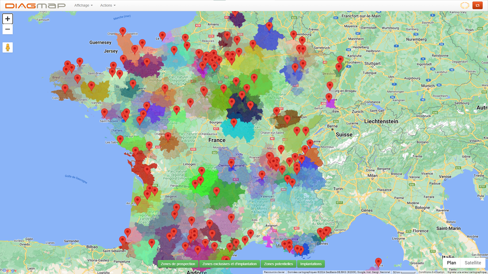

Parmis les différents tickets mantis, beaucoup sont des petits projets ou correctifs à faire. J'en ai fait quelques- uns, parmi lesquels je peux présenter les plus intéressants.
Il existe un module, diagmap, qui présente une carte avec les différents cabinets, leurs zones d'interventions, de prospect, …, sur le territoire français. Ce module utilise l'api googlemap javascript, qui a récemment été mise à jour. La récente mise a jour a apporté des conflits qui font que la page ne charge plus. Je remarque que le soucis se situe sur un de nos imports, prototype.js qui a pour but de définir des fonctions javascript native pour des anciens navigateurs. Cet import réécrit donc des méthodes de javascript que google map utilise, ce qui fait que plus rien marche. Après avoir réglé le problème en supprimant l'import qui ne servait dans tous les cas plus à rien, un deuxième problème apparaît : Les marqueurs n'apparaissent plus sur la carte. Je met à jour notre utilisation des marqueurs pour le nouveau système de marqueurs, car les anciens sont dépréciés. Un dernier problème apparaît, Il y a des trous dans notre carte, ou certains codes postaux qui devraient être colorés ne le sont pas. Le problème vient de notre script php qui récupère les coordonnées depuis notre base de donnée, qui effectue un split dans les coordonnée avec le mauvais séparateur, ce qui fait que certains points des polygones à colorier ont un point-virgule dans la coordonnée, donc la création du polygone ne se fait pas.
Une fois le module réparé, on obtient le résultat suivant :
Le deuxième petit projet est une api d'envoi de mail simple, avec pièce jointe par lien ou par fichier directement. Le logiciel terrain pour les devis effectue des envois de mail (par exemple un envoi de mail pour notifier que le dossier est en ligne,...) , ce qui est lourd et peut être long. L'objectif ici est de lui faciliter la tâche en ayant juste un appel api a faire. Pour cela, je crée la route dans les webservice, j'y implémente les différentes conditions et sécurités (pour éviter que n'importe qui connaissant la route l'utilise pour envoyer des mails), les retours avec les codes de succès et d'erreurs.
Un troisième projet est un système d'inscription et de désinscription automatiques pour les nouveaux franchisés et pour ceux qui quittent le réseau, des listes de mails, et des listes de SMS. On utilise ces listes pour tenir les franchisés au courant, par exemple de perturbation du système, de maintenance, de nouveautés,... J'ajoute donc des appels api mailjet et SMSmode à l'ajout et au retrait des franchisés dans le controller, et j'ajoute également les boutons nécessaires dans le super Admin pour le faire à la main et pour voir qui est inscrit ou pas.
Deux autres exemples de projets annexes similaires font intervenir des services extérieurs, en l'occurrence hotjar et termly.
- Hotjar permet de récolter les données de navigation des utilisateurs du site, pour comprendre leur manière de naviguer sur le site est de créer des statistiques.
- Termly est une consent management platform, une plateforme qui gère les cookies, les données récoltées, … Elle a l'avantage d'être certifiée par google, ce qui a des avantages pour les publicités ciblées notamment.
Ces deux services s'implantent de la même manière. Il fournit un bout de code javascript à ajouter dans les pages web ou on veut que le service fasse effet. Pour les ajouter efficacement, j'utilise le système d'inclusion des blade laravel, pour créer un seul fichier qui va s'inclure dans toutes les autres vues.